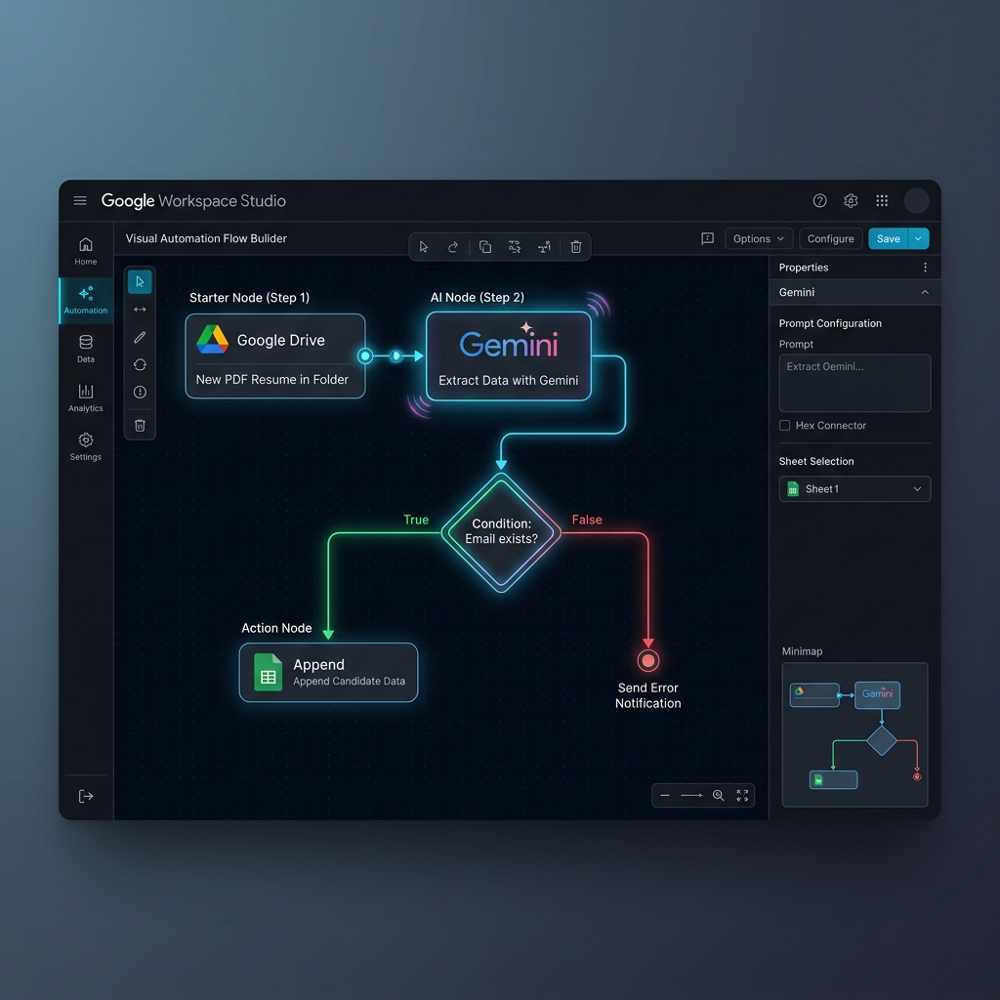
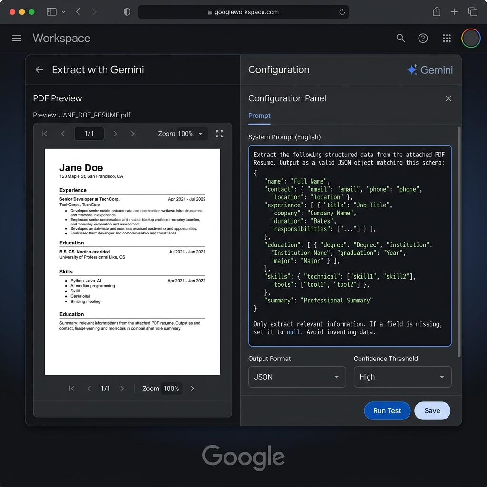
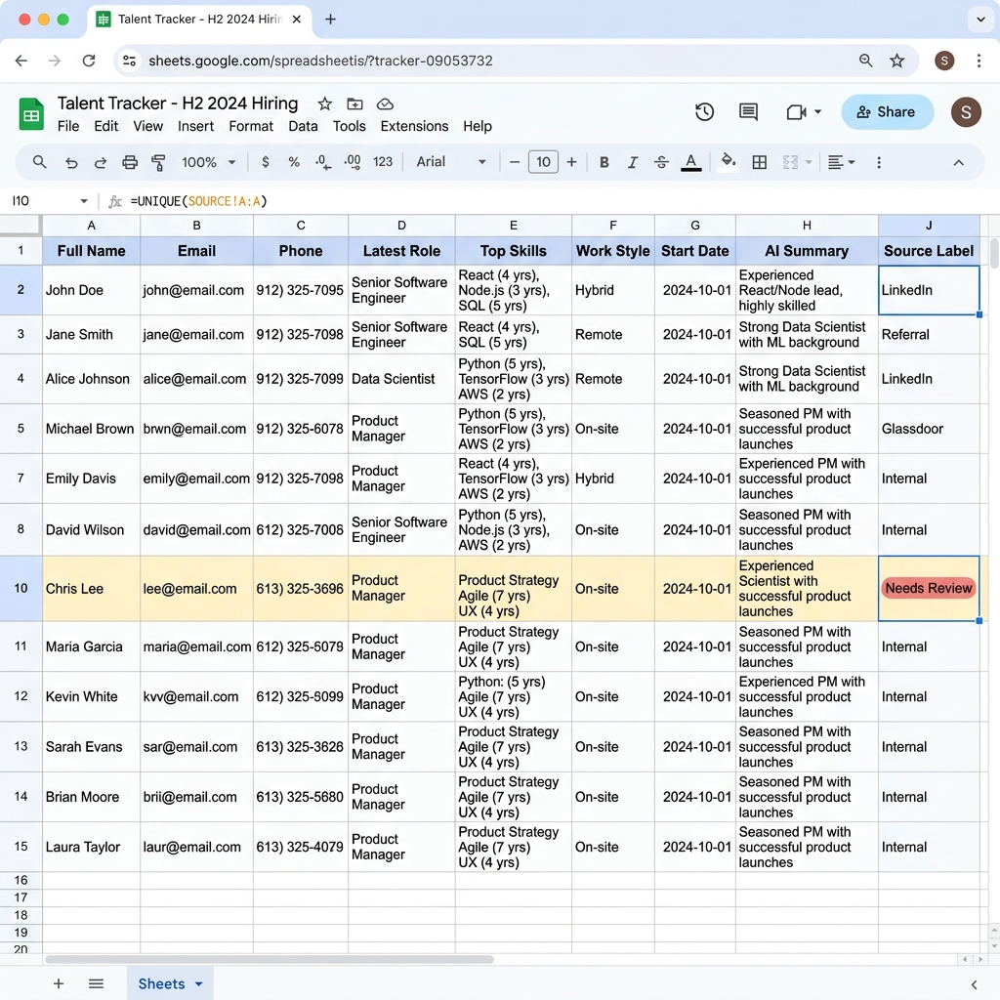

Architecting a self-driving Talent Ingestion Pipeline: From raw PDF resumes in Google Drive to structured insights in Sheets.
In every major hiring campaign, Human Resources (HR) departments face a common bottleneck: **Manual Data Intake**. Reading through hundreds of PDF resumes, extracting individual contact details, and documenting technical skills into an Applicant Tracking System (ATS) can consume dozens of hours per week—with a high risk of manual error.
With Google Workspace Studio, we are entering a new era of operational efficiency. By combining the natural language processing and computer vision powers of Gemini AI, the "Talent Ingestion" process can now run autonomously. This blog provides a blueprint for building an intelligent workflow that transforms raw, unformatted PDF resumes into clean, structured data rows in Google Sheets instantly.
The core difference between this system and traditional OCR (Optical Character Recognition) tools is its Understanding capability. Instead of just scanning text, Gemini understands the hierarchical structure of a resume.
The system doesn't just extract names or numbers; it synthesizes years of experience with specific technologies, identifies candidate preferences, and provides a preliminary fit assessment based on context.
Create the "Incoming_CVs" folder on Google Drive and set up the Workspace Studio Starter: "When a file is added to folder".
Configure the "Extract data with Gemini" step. To ensure high accuracy and reliable column mapping, we use a standardized English Prompt with JSON formatting:
"Extract the following structured data from the attached PDF Resume. Output as a valid JSON object:
{
\"full_name\": \"string\",
\"email\": \"string (unique)\",
\"phone\": \"string\",
\"recent_role\": {
\"company\": \"string\",
\"title\": \"string\",
\"duration\": \"string\"
},
\"top_skills\": [\"string (with years of experience)\"],
\"preferences\": {
\"work_style\": \"Remote | Hybrid | Onsite\",
\"earliest_start_date\": \"string\"
}
}
If a field is missing, use 'Not specified'."
The sequence includes variable mapping, duplicate detection via email, logic branching, and finalized sheet injection.
A major pain point for HR is "Scanned Resumes"—PDFs without a selectable text layer. Traditional tools often fail here, or require expensive OCR pre-processing. However, Gemini Multimodal in Workspace Studio can "see" and interpret pixels directly.
When encountering a scanned image-based PDF, Gemini automatically activates its Vision capabilities. It doesn't just recognize characters; it is Layout-aware, identifying headers, footers, and sidebars accurately. Hallucinations are minimized by forcing AI to output into a pre-defined JSON schema, ensuring data fits perfectly into the target spreadsheet columns.
The system utilizes Email as the Unique Identifier. If the var_email already exists in the tracker, the system follows an update branch (Update Row) to capture the latest application timestamp for that specific talent.
Trust in automation is built through transparency. Below is our internal validation table using complex resume samples:
| Data Field | PDF Location (Source) | Sheet Result | Success Status |
|---|---|---|---|
| 1. Full Name | Main Header | John Doe A | ✅ Success |
| 2. Email | Icon next to name | jdoe@google.com | ✅ Success |
| 3. Phone | Under name | 090-xxx-xxxx | ✅ Success |
| 4. Latest Corp | Exp section (Top) | AI Lab Corp | ✅ Success |
| 5. Job Title | Exp section | Senior AI Engineer | ✅ Success |
| 6. React Exp | Skills list | 4 years | ✅ Success |
| 7. Languages | Sidebar section | IELTS 7.5 | ✅ Success |
| 8. Work Style | Preferences | Remote | ✅ Success |
| 9. Start Date | Preferences | ASAP | ✅ Success |
| 10. Portfolio Link | CV Footer | github.com/jdoe | ✅ Success |
Explore the Workspace Studio configuration below to understand the technical architecture:
The entire pipeline from Drive to Sheets is orchestrated via drag-and-drop nodes.

Configuring the high-precision English JSON prompt for flawless extraction.

Candidate profiles are instantly injected into the talent tracker spreadsheet.

Deploying this automated resume extraction flow is about more than just data entry. It is the first step in building a Strategic Talent Database. When data is structured accurately from the start, HR teams can leverage semantic searching and filters to make data-driven decisions rather than relying on intuition.
The future of recruitment belongs to those who optimize their data flow using AI, not those with the most data entry staff.